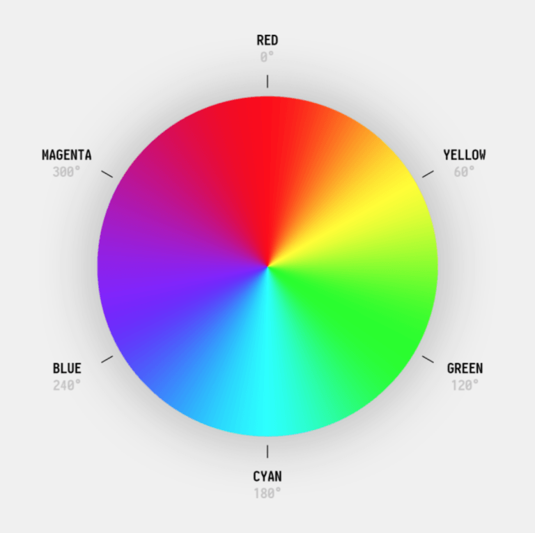

hsl consists of 3 parts:
look at the color wheel. there are several degrees on that. Hue is the a degree on the color wheel from 0 to 360.
red is 0, green is 120 and blue is 240.It is seen on the color wheel yellow , cyan and magenta . when we want to have another colors,we have to move on the cycle and adjust them.

The next part is saturation, which is better to mean "color intensity". At the edge of the wheel, the colors are completely saturated. that is, they are in the boldest possible state. The further we move inside the circle, the fainter the colors become. Actually,Saturation is a percentage value, 0% means a shade of gray, and 100% is the full color.
The lightness of a color can be described as how much light you want to give the color, where 0% means no light (black), 50% means 50% light (neither dark nor light) 100% means full lightness (white).